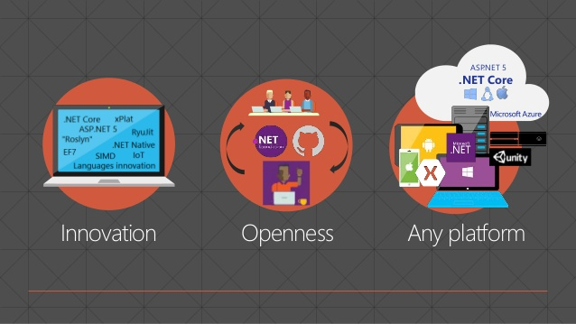
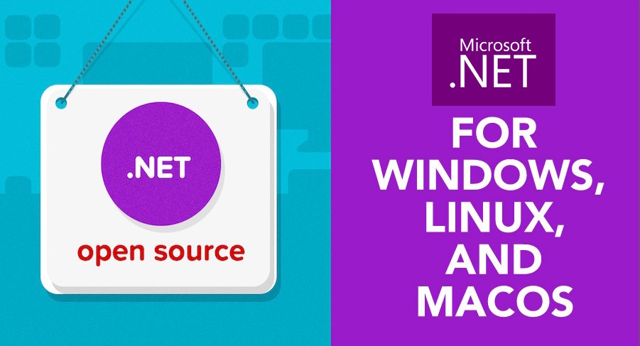

.Net Framework vs .Net Core
Microsoft ha lanzado recientemente un nuevo producto perteneciente al ecosistema de .Net, denominado .Net Core, el cual va dirigido a la programación multiplataforma desde un entorno de desarrollo único. Este está actualmente constituido por un entorno de desarrollo, un framework y, las herramientas y compiladores del SDK. Actualmente, los lenguajes de desarrollo soportados son C# y F#, como era de esperar, aunque en breve tambián aceptará VB para la escritura de aplicaciones. El desarrollo y compilación de aplicaciones se podrá realizar desde cualquier IDE o editor de textos y compatible a cualquier SO (Linux, Mac y Windows).
“We’ve decided to drastically simplify the porting effort by unifying the core APIs with other .NET platforms, specifically the .NET Framework and Mono/Xamarinm”, comenta el Program Manager Immo Landwerth.
Realmente, .NET Core proporciona un conjunto de API que están disponibles actualmente tanto en .NET Framework como en Mono/Xamarin, pero asegurándose de la compatibilidad real en todos los entornos/SO de ejecución (mapa de ruta de .NET Core). Cabe destacar que no existe actualmente una compatibilidad total con las bibliotecas que disponíamos hasta ahora.

Para portar una aplicación realizada en .NET Framework o en Mono/Xamarín, debemos realizar cambios y/o modificaciones tanto en las librerías, llamadas como en algunos casos de la funcionalidad; para que puede ejecutarse sin incompatibilidades o dependencias incompletas. Todas las herramientas disponibles está centradas en el desarrollo de aplicaciones de consola y en Windows Presentation Foundation (WPF usa XAML para crear interfaces de usuario (UI)), la apariencia utilizada en las nuevas aplicaciones de escritorio de Windows 10, Microsoft .NET Framework 3.5, tanto para ejecuciones en escritorio como en la web.
.NET Core implementa la biblioteca estándar .NET y, por tanto, admite las bibliotecas estándar .NET, pero no permite la ejecución de Web Forms, Windows Forms… y en el caso de Mono/Xamarin tampoco es compatible con toda su biblioteca, ni con Windows Forms o Xamarin.iOS, es código abierto y se distribuye libremente desde github, pero se centra principalmente en el desarrollo cloud con grandes cargas de trabajo.
Está pensado principalmente principalmente para aplicaciones multiplataforma, que funcionen en varios sistemas y en microservicios, es compatible con las principales arquitecturas (admite actualmente CPU X64. En Windows, tambián se admite X86. ARM64 y ARM32 están en curso) y con los SO actuales (en Windows, macOS y Linux. En Linux, Microsoft admite principalmente la ejecución de .NET Core en las familias de distribución Red Hat Enterprise Linux (RHEL) y Debian).

Personalmente, me parece una oportunidad única para realizar desarrollos multiplataformas con todo el apoyo comercial y soporte de Microsoft (con la seguridad de que realizará una masiva distribución y aporte tácnico a la plataforma), lo que augura una gran aceptación por parte de la comunidad empresarial y open source, como de la divulgación de una gran cantidad de material de .NET Core.
En breve, deseo reflejar mi experiencia personal portando mi proyecto fin del C.F.G.S. desde .NET Framework 4.0 en el cual se realizó a .NET Core. Siendo consciente de que no podrá utilizar Windows Forms en los que está basado y algunas dependencias de las bibliotecas nativas, estoy seguro de que será un reto interesante, el cual espero sea factible y satisfactorio.
Fuentes:
https://docs.microsoft.com/es-es/dotnet/articles/core/
https://msdn.microsoft.com/es-es/library/cc295302.aspx
https://docs.microsoft.com/es-es/dotnet/articles/core/porting/
http://www.campusmvp.es/recursos/post/Cuando-deberias-usar-NET-Core-y-cuando-no.aspx
Lecturas recomendadas:
http://www.michael-whelan.net/porting-dotnet-framework-library-to-dotnet-core/
https://visualstudiogallery.msdn.microsoft.com/1177943e-cfb7-4822-a8a6-e56c7905292b